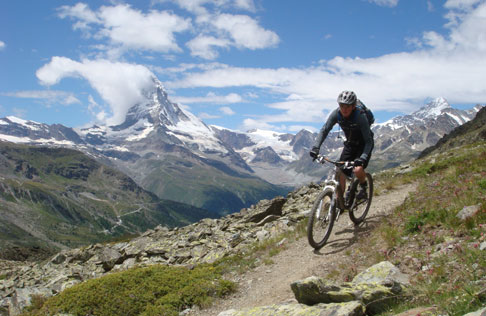

|  |
À PROPOS DE LOUIS GARNEAU:Louis Garneau s'est consacré au
cyclisme toute sa vie. En 13 ans
comme coureur cycliste
internacional et plus de 150
victoires, parmi lesquelles il a
remporté le championnat canadien en
poursuite individuelle, Louis
Garneau a fait évoluer sa carrière
à trevers sa passion.
|